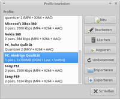

OGMRip
Dieser Artikel wurde für die folgenden Ubuntu-Versionen getestet:
Ubuntu 14.04 Trusty Tahr
Zum Verständnis dieses Artikels sind folgende Seiten hilfreich:
OGMRip  ist eine recht einfach zu bedienende Anwendung zum Auslesen und Speichern (Rippen) von DVDs in eine Reihe verschiedener Video-Dateiformate. Daneben kann OGMRip aber auch zur Formatumwandlung (Transcodierung) vorhandener Videodateien verwendet werden. Da statt kryptischer Codierungsparameter nur einfache und verständliche Angaben zur Steuerung der Video- und Audiocodierung gemacht werden müssen, sollten auch weniger erfahrene Nutzer mit der Software gut zurecht kommen. Für die Ausführung der notwendigen Operationen greift OGMRip auf die Kommandozeilenversionen der Programme MPlayer, MEncoder, ogmtools, MKVToolNix, oggenc, LAME und faac zurück.
ist eine recht einfach zu bedienende Anwendung zum Auslesen und Speichern (Rippen) von DVDs in eine Reihe verschiedener Video-Dateiformate. Daneben kann OGMRip aber auch zur Formatumwandlung (Transcodierung) vorhandener Videodateien verwendet werden. Da statt kryptischer Codierungsparameter nur einfache und verständliche Angaben zur Steuerung der Video- und Audiocodierung gemacht werden müssen, sollten auch weniger erfahrene Nutzer mit der Software gut zurecht kommen. Für die Ausführung der notwendigen Operationen greift OGMRip auf die Kommandozeilenversionen der Programme MPlayer, MEncoder, ogmtools, MKVToolNix, oggenc, LAME und faac zurück.
Folgende Formate werden von OGMRip unterstützt:
Dateiformate: OGM, MKV, MP4, AVI
Videocodecs: X264, XVID, LAVC, Theora
Audiocodecs: AAC, MP3, Vorbis, AC3, DTS, PCM
Untertitel: VOBSUB, SRT
Installation¶
OGMRip ist bis in den offiziellen Paketquellen vorhanden. Es muss das folgende Paket installiert [1] werden:
ogmrip (multiverse)
 mit apturl
mit apturl
Paketliste zum Kopieren:
sudo apt-get install ogmrip
sudo aptitude install ogmrip
Fremdquelle¶
GetDeb bietet eine Fremdquelle für die jeweils aktuellste Version an: OGMRip . Unterstützt werden auch ältere Ubuntu-Versionen.
Hinweis!
Zusätzliche Fremdquellen können das System gefährden.
Programm verwenden¶
Nach der Installation lässt sich bei Ubuntu-Varianten mit einem Anwendungsmenü das Programm über "Multimedia -> OGMRip DVD-Ausleser" aufrufen.
Nutzung¶
Im Programm kann man über den Button "Laden" das Laufwerk auswählen und lesen lassen. Man erhält eine Kapitelübersicht, in der man die auszulesenden Kapitel per Checkbox anwählen kann. Über den Button "Auslesen" kommt man in einen Dialog, in dem man per Dropdown-Liste die gewünschte Qualität auswählen kann. Anschließend kann man den Vorgang starten.
Einstellungen¶
Über das Menü
"Bearbeiten -> Einstellungen"
gelangt man zu den Optionen. Hier kann man unter anderem den Zielpfad, den Dateinamen oder bevorzugte Sprachen und Untertitel wählen. Außerdem können hier Einstellungen getätigt werden, ob und wo die ausgelesenen Dateien zwischengespeichert werden sollen.

Profile¶
Die Qualität wird bei OGMRip über voreingestellte Profile gesteuert. Ein paar Profile sind bereits vordefiniert und können für das Auslesen sofort verwendet werden. Es ist jedoch auch möglich, diese Vorgaben zu ändern oder neue Profile hinzuzufügen. Diese Einstellungen können über das Menü
"Bearbeitung -> Profile"
verwaltet werden.
Problembehebung¶
DVD for standalone player¶
Das Profil "DVD for standalone player" beinhaltet in der Version 0.13.6 (Ubuntu 12.04) zwei Fehler: Zum einen ist die Ausgabegröße mit 4,7 GiB zu groß für eine DVD-5, zum anderen dauert die Konvertierung unnötig lange. Abhilfe kann ein Bearbeiten des Profils verschaffen. Dazu stellt man die Ausgabegröße auf 4370 MB und reduziert die Video-Durchgänge von sechs auf zwei.
 Programmübersicht
Programmübersicht- Erstellt mit Inyoka
-
 2004 – 2017 ubuntuusers.de • Einige Rechte vorbehalten
2004 – 2017 ubuntuusers.de • Einige Rechte vorbehalten
Lizenz • Kontakt • Datenschutz • Impressum • Serverstatus -
Serverhousing gespendet von